The challenge
Customers depended on the Library as a reusable source of truth, but keeping it accurate required constant manual work. As content decayed, people trusted search and AI answers less — which made maintenance even harder to sustain.
Know what needs attention, understand why, and resolve Library issues without spending hours investigating.
Improve Library quality so customers get more value from search and AI, while reducing a major source of churn risk.
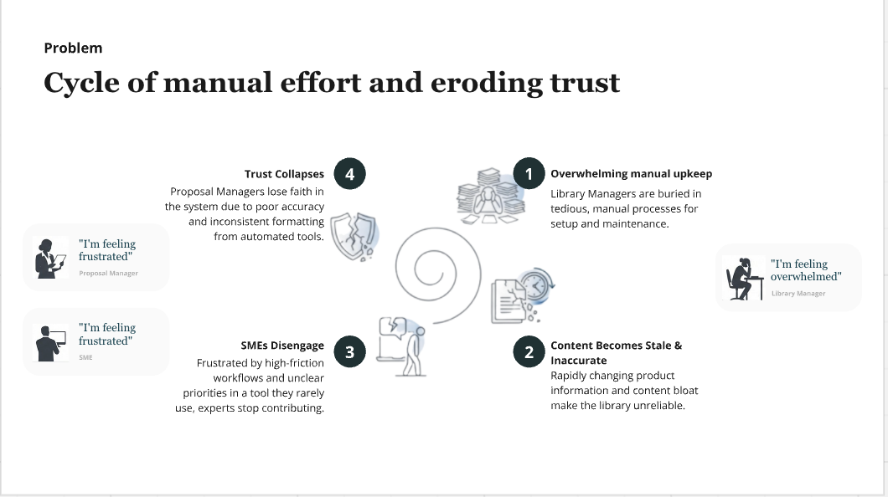
Discovery surfaced four recurring pain points
Library quality wasn’t breaking down because of one isolated issue. Across customer feedback, UserVoice data, and internal teams, four recurring problems were making the Library harder to maintain and less trustworthy over time.
Stale, duplicate, and low-confidence content reduced Library reliability.
High-friction workflows created bottlenecks and made it harder to keep content current.
Setting up, cleaning, and structuring a new Library required significant manual effort.
Changes made in projects and external sources created conflicts, gaps, and outdated Library content.
Some customers were already exporting their Libraries, running them through external AI, and coordinating cleanup in spreadsheets before re-uploading. The maintenance problem was real and users were already inventing their own workarounds.
Testing where AI could actually help
We explored five concepts rather than assuming every Library problem needed an agent. The goal was to understand where AI could remove meaningful work, and where a simpler product fix would be more appropriate.
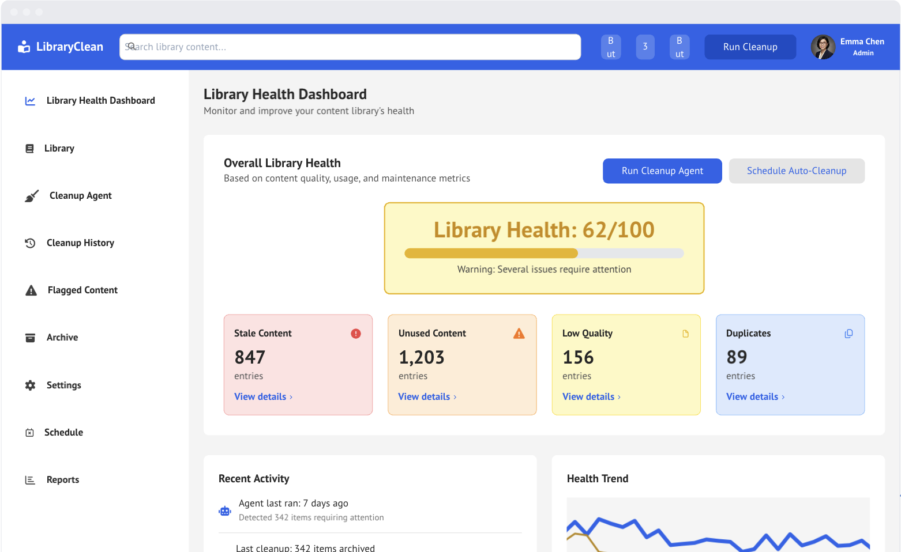
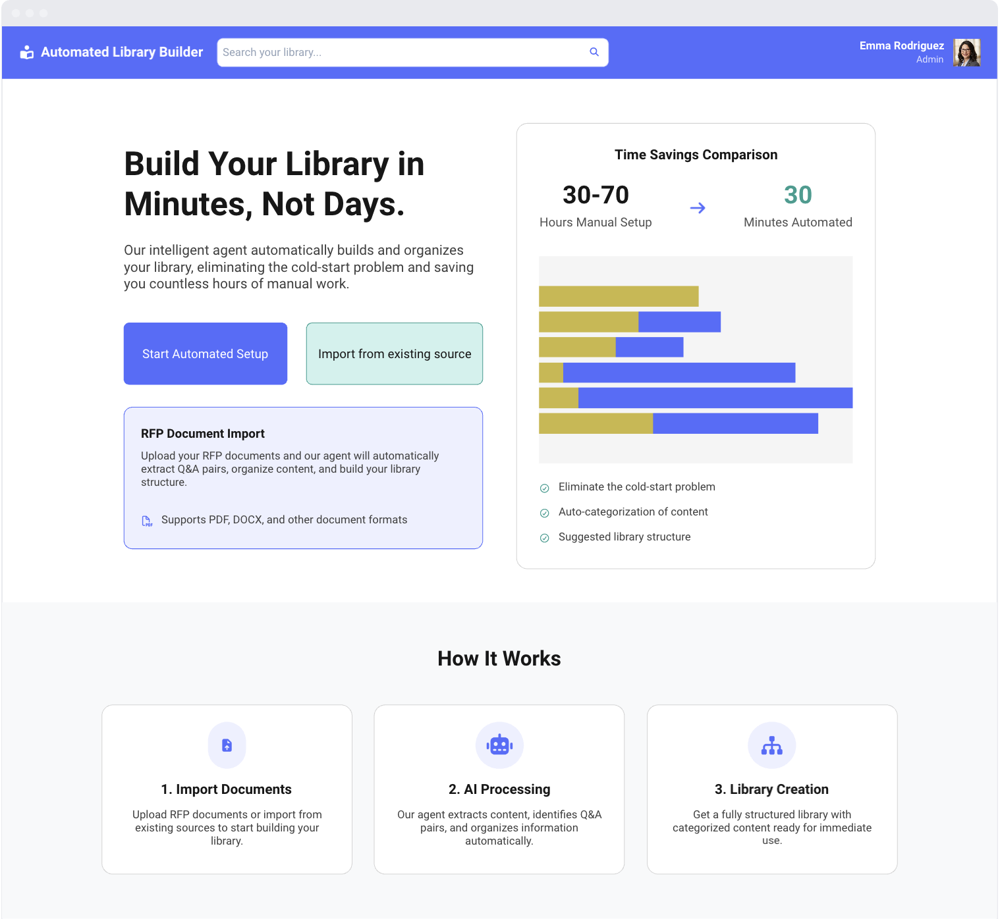
Cleanup gave us the clearest place to start
Concept testing gave us a clear decision point. Library bloat and decay was the top-ranked Library pain point for 6 of 10 customers, and cleanup matched the role users were comfortable giving AI: do the investigative work, explain the issue, and recommend what to do next.
We narrowed the first release around three recurring problems that directly undermine trust in the Library:
Multiple entries saying the same thing made it harder to know which answer to trust.
Outdated language, old claims, and neglected reviews could quietly become unreliable.
Contradictory answers forced users to investigate which claim was actually correct.
Help Library managers quickly understand what is wrong, why it was flagged, and what action will make the Library more trustworthy, without asking AI to make irreversible decisions for them.
Key product decisions
The testing changed what “agentic” meant for this product. Users wanted the Librarian to do more thinking, not more acting.
Find issues and recommend a resolution, but require human approval before high-stakes changes.
Every recommendation needed a reason, supporting sources, and enough context to make a decision.
Surface the most useful work first instead of overwhelming admins with thousands of issues.
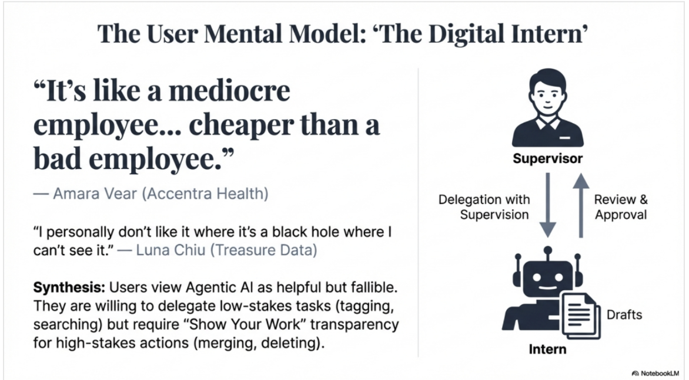
Defining how the Librarian should help
Once the problem was narrowed, I defined a shared interaction model so duplicates, stale content, and conflicts would feel like one coherent system rather than three separate tools.
Detect meaningful issues using content, metadata, usage, review history, and source information.
Show the exact signal, conflicting text, duplicate overlap, or outdated language that triggered the issue.
Suggest what to keep, update, merge, delete, or route to a reviewer — and explain why.
Let users edit the recommendation, choose another path, dismiss it, or send it to someone else.
Use what the Librarian learns to warn about duplicates, conflicts, and missing metadata upstream.
I realized I was designing another queue.
My first direction was a broader Cleanup Agent that would replace the existing duplicate-cleanup tool and add stale-content and conflict resolution. But while designing it, I realized the deeper problem: Loopio already split maintenance across Reviews from Library, Reviews from Projects, and Duplicate Cleanup. A better cleanup tool still left users managing multiple places.
So I stepped back and redesigned the information architecture instead.
Before
After
Project suggestions · Scheduled reviews · Library cleanup
Librarian assistance across every reviewThe redesigned Library maintenance system
The Librarian became a layer of decision support across every kind of review — not a separate tool users had to remember to visit.
One queue for everything that needs attention
Users could move between Project suggestions, Scheduled reviews, and Library cleanup without leaving the Reviews experience. Cleanup issues appeared alongside existing work with type, source, owner, and due-date context.
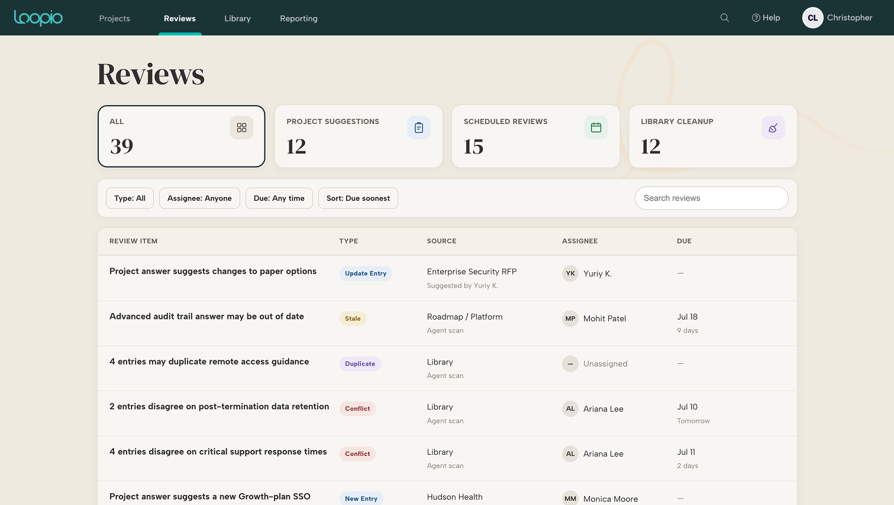
The Librarian gave every review a second set of eyes
Recommendations were paired with expandable reasoning and linked sources. The agent could agree with a human suggestion, flag a concern, or surface context the reviewer might otherwise have to hunt down manually.
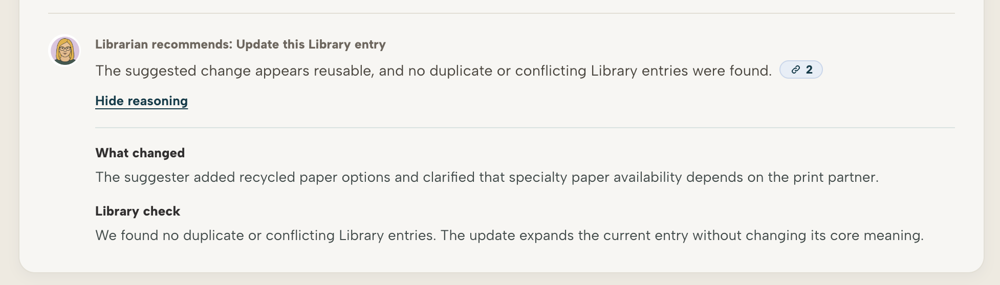
Stale content: make outdated answers faster to review
The Librarian surfaced stale content with a clear reason for the flag and a suggested update, helping reviewers quickly understand what changed and what to do next. They could edit or approve the update, assign it for review, delete the entry, or dismiss the issue.
Duplicates: build the merged result before removing anything
The Librarian picked a recommended surviving entry based on usage, completeness, and wording, then pulled unique details from the duplicates into a proposed final answer. Users could edit the result, inspect every entry that would be removed, and review the merge before confirming it.
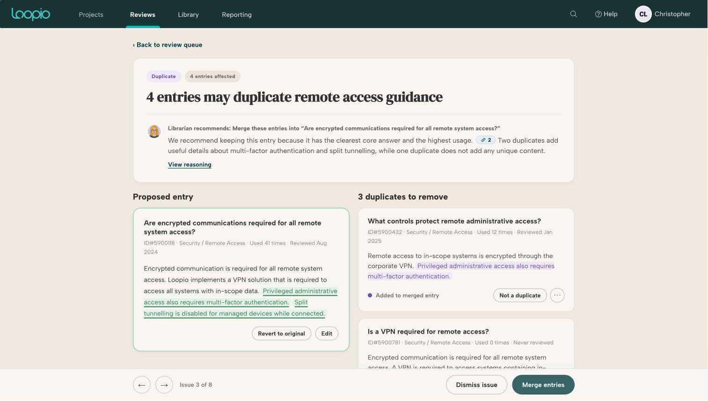
Conflicts: resolve the claim, not just the entries
For conflicting content, I grouped entries around the claims they made. The Librarian preselected the claim it believed was correct using source evidence and review recency, but users could choose another claim, edit individual entries, mark something as not a conflict, or review exactly what would change before applying it.
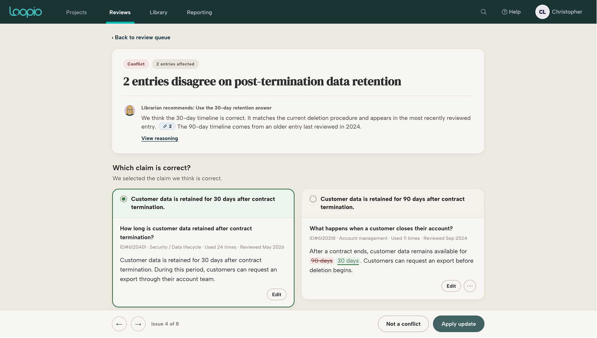
Project suggestions: turn project work into better Library content
When users answer questions in a project, they can suggest that new or updated content be added back to the Library for future reuse. The Librarian reviewed those suggestions against what was already in the Library: checking whether the answer should update an existing entry, create a new one, or be rejected because it duplicated or conflicted with existing content. If a linked source contradicted the suggestion, the Librarian could recommend keeping the current Library content instead.
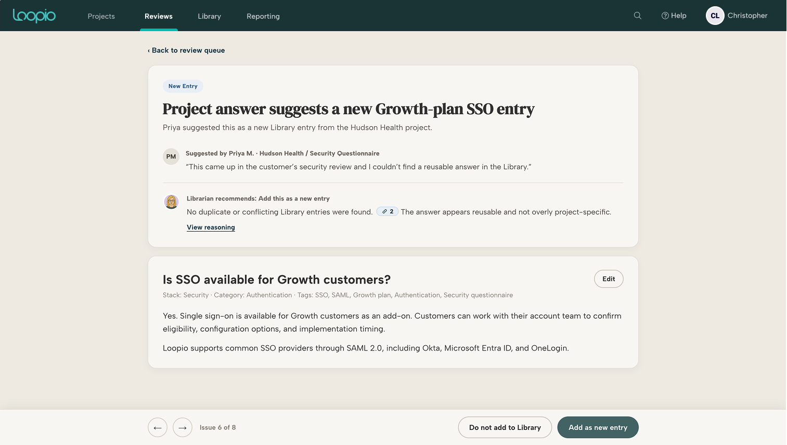
Scheduled reviews: make existing work smarter too
Scheduled reviews were already a manual maintenance task. The Librarian acted like an assistant inside that existing workflow — surfacing relevant context, checking for potential issues, and recommending what to do next so reviewers could make the same human decision with less investigation.
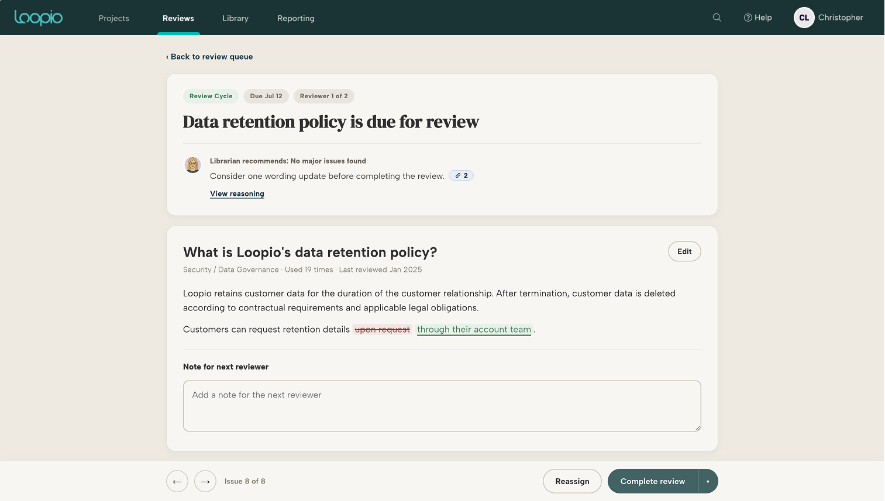
Testing shaped the solution
I iterated on the prototype across multiple usability sessions with customers and internal users. Testing validated the unified Reviews direction, but it also changed the details of how the Librarian needed to behave.
I increased the visibility of sources, reasoning, and the exact text behind a recommendation so users could decide without leaving the workflow to investigate.
Merge, delete, update, and conflict-resolution flows became more reviewable, with clearer previews of what would change before anything was applied.
The Librarian’s language and interaction model were refined around recommendations and context, while the reviewer stayed responsible for the final decision.
“I like that it’s all in one queue instead of jumping between different areas.”
“I wouldn’t want it to just update things automatically.”
“If it shows me the source and why it’s suggesting the change, I’d feel comfortable using it.”
From cleanup tool to a smarter maintenance system
What started as a narrow cleanup agent evolved into one Reviews experience that made both new and existing maintenance work smarter.
The final direction brought scheduled reviews, project suggestions, and Library cleanup into one place, with the Librarian acting as an assistant across each workflow. Research and usability testing consistently reinforced the same model: surface the right context, explain the recommendation, and keep the user in control.
By the end of the project, the concept had been validated with customers and was being scoped with engineering for implementation when I left Loopio.
From review assistant to proactive Librarian
The first version focused on helping users make individual review decisions faster. Over time, I’d push the Librarian further upstream, from assisting with work that already exists to continuously deciding what deserves attention in the first place.
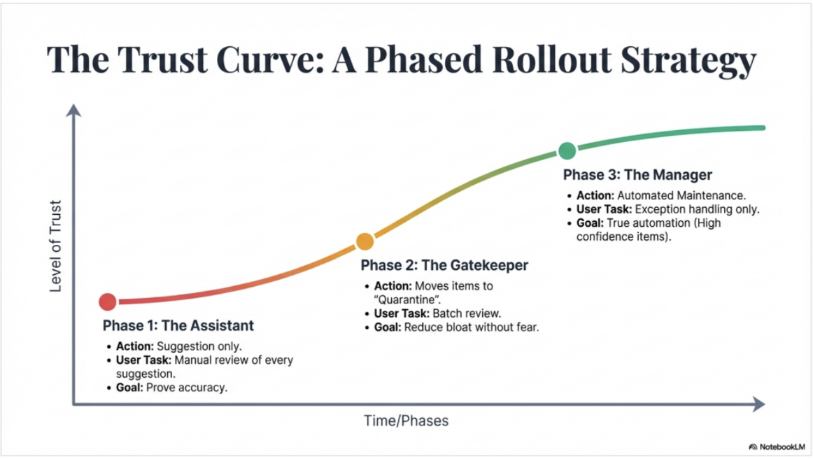
Prioritize the highest-impact issues across cleanup, scheduled reviews, and project suggestions instead of asking users to work through a backlog.
Surface patterns across the Library, recommend the next best maintenance task, and let users ask the Librarian what needs attention.
Prioritize the highest-impact issues across cleanup, scheduled reviews, and project suggestions instead of asking users to work through a backlog.
As trust builds, allow teams to automate low-risk actions while keeping high-impact changes reviewable and reversible.